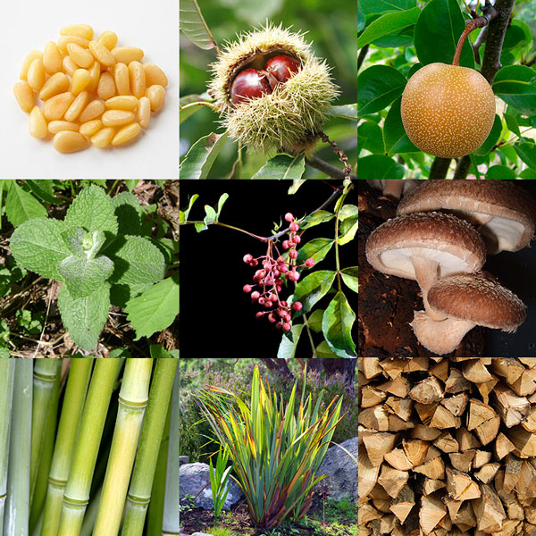
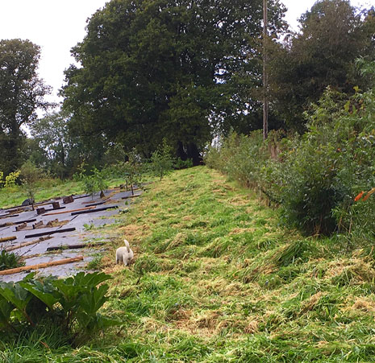

class: center, middle ### An introduction to <br>Forest Gardening 🌳 _Background theory & practical jobs_  Jake Rayson, [Forest Garden Wales](https://www.forestgarden.wales/) Website: [www.forestgarden.wales](https://www.forestgarden.wales/) Email: [hi@forestgarden.wales](mailto:hi@forestgarden.wales/) Twitter: [@ForestGdnWales](https://twitter.com/ForestGdnWales/) <span style="font-size:small">Press `P` to see notes and credits</span> ??? * Quick intro. Web designer 20 years. Forest gardener 3 years. * 1 acre forest garden in development, 1 acre planned * 8 acre site, woodland, coppice, rough pasture * A talk of two halves --- class: center, middle # An introduction to <br>Forest Gardening 🌳 ### _Working with nature_  ??? * Working with nature. Pretty much sums it up. * [Creating a Forest Garden](https://www.agroforestry.co.uk/product/creating-a-forest-garden-2/): buy this book * Read it cover to cover in a terraced house with a paved yard for 3 years. --- # Pt. I: What is a forest garden? > A productive and practical garden system using trees, shrubs and perennial plants, designed to be stable, sustainable and low-maintenance. ## Features * Diverse harvests 🌰 🍏 🍐 🥝 🍇 🍒 * Multi-layered space * Large number of species * Nitrogen fixers & mineral accumulators * Attract predators & pollinators 🐞 🐝 🦋 ??? * Productive. Practical. Low-maintenance. No nonsense. * Harvest is varied. * Garden _system_ is the whole system. * Traditional agricultural science can’t cope with complexity of forest garden, 100+ species of plants. * History. Robert Hart, Much Wenlock, Shropshire. Other countries. * My example of resilience and diversity, with north face hedge --- # Forest garden harvest Where you start is what you want. <div style="float:left"> * Fruits, nuts & seeds * Vegetables & salad * Herbs & spices * Firewood * Mushrooms * Poles, canes & twine * A beautiful space </div>  ??? ## Credits * Nashi pear CC BY-SA 3.0, https://commons.wikimedia.org/w/index.php?curid=1053284 * Sweet chestnuts by Fir0002 - Own work, GFDL 1.2, https://commons.wikimedia.org/w/index.php?curid=194812 * Pine nuts by National Institute of Korean Language - http://krdict.korean.go.kr/eng/dicSearch/viewImageConfirm?nation=eng&searchKindValue=image&ParaWordNo=73584&ParaSenseSeq=1&multiMediaSeq=1, CC BY-SA 2.5, https://commons.wikimedia.org/w/index.php?curid=54784498 * Lime flowers & bumblebee by Ivar Leidus - Own work, CC BY-SA 4.0, https://commons.wikimedia.org/w/index.php?curid=49911060 * Szechuan pepper by Didier Descouens - Own work, CC BY-SA 4.0, https://commons.wikimedia.org/w/index.php?curid=7801853 * Phormium tenax by Dan Kirtiansen https://www.flickr.com/photos/dankristiansen/ * Shiitake mushroom by frankenstoen from Portland, Oregon - Shiitake Mushrooms, CC BY 2.0, https://commons.wikimedia.org/w/index.php?curid=7304024 * Firewood by Toyohara https://www.flickr.com/photos/toyohara/ * Bamboo by Bruce Fingerwood https://www.flickr.com/photos/springfieldhomer/ * Apple mint by Broly0 - Own work, CC0, https://commons.wikimedia.org/w/index.php?curid=40553620 --- class: center, top # What does your garden <br>want to be?  ??? * [Climax vegetation](https://en.wikipedia.org/wiki/Climax_community) * [Ecological succession](https://en.wikipedia.org/wiki/Ecological_succession) * Pioneering plants --- class: center, top # What do we want our<br>gardens to be?  ??? * What a lot of bother * Also, not really productive * "Gardening is control of nature but we don’t want to be control freaks" ~ Tom Coward, Head Gardener, Gravetye Manor 2015 ## Credits * Photo of Hanbury Hall formal garden by muffinn on Flickr https://www.flickr.com/photos/mwf2005/ --- class: left, middle # Climax vegetation  * Energy * Fragility * Uniformity * Maintenance * Greenhouse gas emissions ??? * The further right you go, the more you need. * Frederic Clements coined the term in 1916. * [Climax vegetation](https://en.wikipedia.org/wiki/Climax_community) ## Credits * Illustration copyright © Marion Smylie-Wild, used with permission pp19 [Creating a Forest Garden](https://www.agroforestry.co.uk/product/creating-a-forest-garden-2/) by [Martin Crawford](https://www.agroforestry.co.uk/about_us/) --- class: left, middle ## Gently balance the garden <br>On the cusp of woodland <br>With minimal effort ??? * Not-Haiku: author’s own --- # Scientifically efficient 👩🔬 Efficiency is the ratio of the _input_ to the output. ```html Animal 1 : 0.8 Arable 1 : 4 Forest Garden¹ 1 : 40 ``` * Proviso: once established * Perennial plants are less work * No compost bins, compost in situ Forest gardening also flexible, any size or part of garden. ??? 1. [Gerald Leach: Energy and food production]() (IPC, 1976). --- # Show me a tree! 🌳  ??? ## Credits * Sweet Chestnut by Peter Broster on Flickr https://www.flickr.com/photos/remedy451/ --- # Pt. II: Jobs in order <div style="float:left;"> 1. Plan 2. Plant windbreaks 3. Plant canopy trees 4. Propagate ground cover 5. Sheet mulch 6. Establish ground cover 7. Plant shrubs </div>  ??? * Image from Forest Garden Wales, North Face windbreak --- # 1. Plan 🗺️ * What harvest do you want? 🌰 🍏 🍐 🥝 🍇 🍒 * What plants do you want? 🌳 🌲 🍀 🍁 🍃 🌿 * [Rootstocks](https://www.forestgarden.wales/blog/rootstock-reference/) & diameters * Windbreaks 🌬️ * Nutrient budget * Access, paths, structures, utilities 🔌 ☎️ 🚰 🏗️ * [QCAD software](http://www.qcad.org/en/) with [OS map](https://www.themapcentre.com/) * Scale paper drawing 🖊️ ??? * Don’t forget to plan your nutrients – pp57 Creating a Forest Garden * Get a soil sample from CCF * OS map from [The Map Centre](https://www.themapcentre.com/), about £40 * Can use [Google](https://goo.gl/maps/934sTaTfWw22)/[Bing](https://binged.it/2sMlUhY) maps * Remember, the map is not the territory * Paper cut-out circles for tree positionings --- # Here’s one I made earlier  Calculate areas (ground cover), position trees (diameters) ??? * Drawing made in [QCAD](http://www.qcad.org/en/) --- # 2. Plant windbreaks * [Elaeagnus umbellata](https://pfaf.org/User/Plant.aspx?LatinName=Elaeagnus+umbellata) (autumn olive) * [Hippophae rhamnoides](https://www.pfaf.org/USER/plant.aspx?LatinName=Hippophae+rhamnoides) (sea buckthorn) * [Viburnum opulus](https://www.pfaf.org/user/Plant.aspx?LatinName=Viburnum+opulus) (guelder rose) * [Amelanchier canadensis](https://www.pfaf.org/user/Plant.aspx?LatinName=Amelanchier+canadensis) (juneberry) * [Cornus sericea](https://pfaf.org/user/Plant.aspx?LatinName=Cornus+sericea) (red osier dogwood)  ??? * Examples that have worked well for us * All available as cheap bare-root hedging plants * Don’t forget [Rosa rugosa](https://www.pfaf.org/user/plant.aspx?latinname=Rosa+rugosa) (japanese rose) ## Credits * Amelanchier canadensis by yamatsu on Flickr https://www.flickr.com/photos/29310050@N04/ * Elaeagnus ubmellata berries by Wendell Smith on Flickr https://www.flickr.com/photos/wendellsmith/ * Viburnum opulus berries by Nickolas Titkov on Flickr https://www.flickr.com/photos/titkov/ --- # Cornus windbreak  ??? * Cornus sericea 'Flaviramea' windbreak on north west side of Forest Garden Wales * Bought from [www.treesandhedging.co.uk](http://www.treesandhedging.co.uk/) 85p each + VAT --- # 3. Plant canopy trees * [Rootstock!](https://www.forestgarden.wales/blog/rootstock-reference/) * Fruit trees [www.orangepippin.com](https://www.orangepippin.com/apples) * Nut trees - squirrels & [Castanea sativa](https://www.pfaf.org/user/plant.aspx?LatinName=Castanea+sativa) * Nitrogen fixing - [Alnus cordata](https://www.pfaf.org/user/Plant.aspx?LatinName=Alnus+cordata) _Considerations:_ * Tree spacing ¼–½ of combined tree diameters * Plant small trees under high trees * [Only stake dwarf rootstock (M26 & smaller)](https://www.forestgarden.wales/blog/don-t-stake-fruit-trees/) * Pollinating partners * Wind exposure ??? * Small trees under eg Alnus cordata, can raise canopy * Don’t forget rabbit guards, super cheap [on Amazon](https://www.amazon.co.uk/100-SPIRAL-TREE-GUARDS-60cm/dp/B0041Z90TM/) 22p each * No Castanea sativa imports --- # 4. Propagate ground cover * [Rubus nepalensis](https://www.pfaf.org/user/plant.aspx?latinname=rubus+nepalensis) (nepalese raspberry) * [Vinca minor](https://www.pfaf.org/user/plant.aspx?latinname=Vinca+minor) (lesser periwinkle) * [Symphytum ibericum](https://www.rhs.org.uk/Plants/75444/Symphytum-ibericum/Details) (dwarf comfrey) * [Fragaria viridis](https://www.pfaf.org/User/Plant.aspx?LatinName=Fragaria+viridis) (green strawberry) * [Mentha longifolia](https://www.pfaf.org/user/Plant.aspx?LatinName=mentha+longifolia) (horse mint)  ??? * Again, examples that have worked well for us * 'Mother' bed * _Supposed_ to put them in pots ## Credits * Rubus nepalensis berry by Jas on Flickr https://www.flickr.com/photos/21442314@N07/ * Vinca minor by Magrit on Flickr https://www.flickr.com/photos/27126314@N03/ * Mentha longifolia by Andreas Rockstein on Flickr https://www.flickr.com/photos/74738817@N07 --- # Propagation bed  ??? * Raised bed at Forest Garden Wales --- # 5. Sheet mulch * Plastic woven sheet mulch * Wide as possible eg 3-4m * Re-usable plastic ground cover pegs * **Weigh it down!** * 6 months grass, 12 months dandelions  ??? * Decent make, eg Yuzet --- # 6. Establish ground cover 1. Mark out shrubs 2. Put down bark 4. Plant ground cover 5. Sow temporary cover  ??? * Mark out shrubs with bamboo, write name, height x diameter * Bark approx 1.5 tonne per 100m². [Newbridge Sawmills](http://www.jamesdaviessawmills.co.uk/) near Cenarth sells it for £38.50 +VAT per tonne, on industrial trailer only, weekdays. * I have used [Sinapis alba](https://www.pfaf.org/user/plant.aspx?LatinName=Sinapis+alba) (white mustard) with great success, partially overwinters. * I bulk bought 27kg Sinapis alba from [Cotswold Seeds](https://www.cotswoldseeds.com/product/mustard-sinapis-alba) for £50. --- # Chalk circles  ??? * Use [magic bamboo marker](https://www.flickr.com/photos/forestgardenwales/28391494269/in/photolist-KfRQ6T) with string, tied with knots every 0.5m * Bucket of powdered lime --- # 7. Plant shrubs * Bamboo * Chaenomeles spp. * Mahonia spp. * Phormium spp. * Rosa rugosa  ??? * List inspired by showy ornamental shrubs pp21 Creating a Forest Garden ## Credits * Quince flower on bush by Martin LaBar on Flickr https://www.flickr.com/photos/martinlabar/ * Mahonia aquifolium by Nacho on Flickr https://www.flickr.com/photos/gonmi/ * Rosa rugosa hips by Bruno Parmentier on Flickr https://www.flickr.com/photos/bpmm/ --- class: center, middle # _The End… ?_  To receive a link to this talk & news of future events, email <hi@mailing.forestgarden.wales> ??? * The right thing to do. * Amser nesa, mae rhai da fi siarad yn Gymraeg! * Next time, herbaceous perennials, mushrooms, herbs, climbers, coppicing etc. * Any questions? --- # Appendix: reference * [Martin Crawford](https://www.agroforestry.co.uk/): books, courses, plants * [Plants for a Future](http://www.pfaf.org/): massive database of useful plants * [RHS Plants](https://www.rhs.org.uk/plants/): good database for more ornamental plants * [Orange Pippin](https://www.orangepippin.com/apples): super fruit tree reference * [Joy of Plants](https://joyofplants.com/): excellent plant app database for iOS [](https://www.agroforestry.co.uk/product/creating-a-forest-garden-2/) --- # Appendix: local suppliers * Anthony & Emma at [Hyphae Shroomery](https://www.facebook.com/HyphaeShroomery), mushroom knowledge & inoculant * Roger at [Trefedhyn Garden Centre](https://www.trefhedyn.co.uk/), perennials & hedging * Aisha at [Ty Rhos Trees](http://www.tyrhostrees.co.uk/), lovely trees and hedging * [Penrallt Garden Centre](http://penralltnursery.co.uk/) * Neil at [Brondesbury Park Garden Centre](https://duckduckgo.com/?q=brondersbury+garden+centre&t=ffab&ia=web), stock [Martins TLC peat-free compost](http://www.martins-tlc.co.uk/) * [Moorland Cottage Plants](http://www.moorlandcottageplants.co.uk/), very good quality * Dave at [Teifi Valley Garden Machinery](https://duckduckgo.com/?q=teifi+valley+garden+machinery&t=ffab&ia=web)